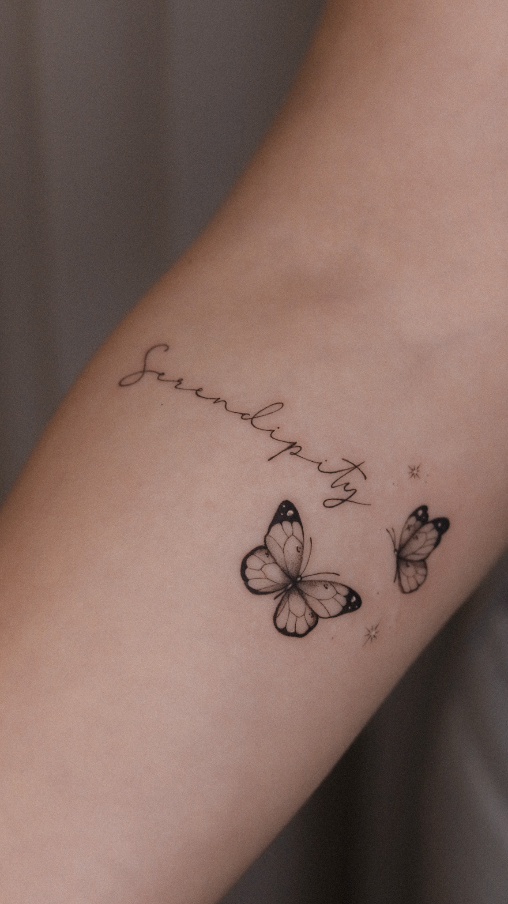

Sobre mim
Nasci e cresci em Florianópolis e sou de família manézinha. Desde quando era pequena tinha interesse por desenhar e com o passar do tempo fui cada vez mais me apaixonando por arte. No final do ensino médio, com 18 anos, comecei a desenvolver desenhos autorais para tatuagens e assim puder perceber o quanto era incrível eternizar arte nas pessoas.
Confesso, que quando comecei não foi nada fácil. Precisei acreditar muito em mim mesma e de que eu tinha um grande potencial de ser a artista que sou. Comecei e aprendi a tatuar em um cantinho da minha casa sozinha, sempre me cobrei muito e procurava melhorar a qualidade do meu trabalho cada vez mais, além de que sou extremamente perfeccionista, priorizando os mínimos detalhes, pois acredito que isso que faz a diferença.
Aos 20 anos de idade, conquistei minha dependência e comecei a morar sozinha e me reconectei com quem eu realmente era Hoje trabalho no primeiro estúdio a Grande Florianópolis composto apenas de artistas mulheres.
Pra mim, nunca foi apenas arte na pele e sim, aumento da auto estima para as pessoas. Cada tatuagem é única, muitas vezes aquilo que elas estão passando naquele momento, trazendo alegria para elas, pois conseguem se olhar com outros olhos e perceberem a transformação que acontecem com elas mesmo.
Ass. JN

Processo criativo
Cada projeto é desenvolvido a partir das ideias de cada pessoa, respeitando sempre os mínimos detalhes que cada arte deve ter.
Todo processo criativo é unico e precisa de um tempo necessário para a criação. Portanto, a arte é apresentada no dia da sessão de acordo com as ideias.
No dia da sessão analisamos juntos o local, tamanho e os mínimos detalhes da arte.
